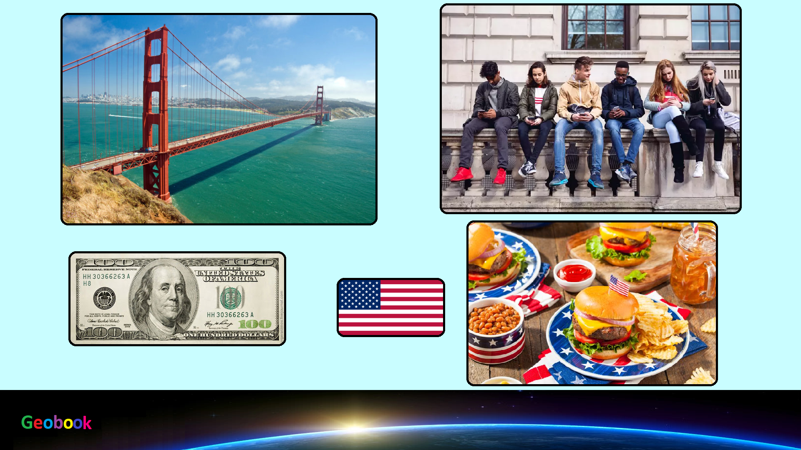

____
Климат
На обширной территории США можно найти почти все типы климата, от арктического и субарктического на Аляске, до тропического на Гавайских островах, в Калифорнии и во Флориде. В основной же части страны климат умеренный континентальный, влажный на востоке и сухой на западе. На узкой полосе тихоокеанского побережья прослеживаются морской умеренный (на севере) и средиземноморский (на юге) типы климата. Общий температурный фон достаточно равномерный. Летом температура в большинстве районов колеблется от +22°С до +28°С, при этом разница между северными и южными штатами относительно невелика. Зима на большей части территории страны довольно мягкая - среднеянварская температура колеблется от -2°С на севере до +8°С на юге.
____
